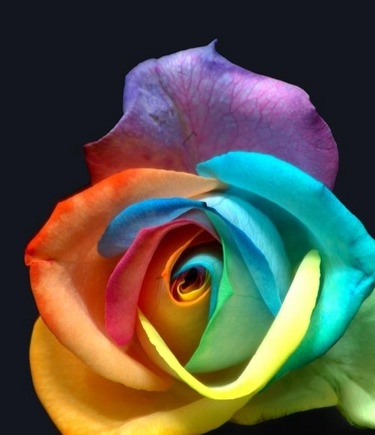

Artists and painters normally follow a coherent theme in their painting. May be we too can improvise if we can orient each brush stroke based on the complete image rather than just the local neighbourhood. One of the ways to do this can be to use gradient information to draw strokes. But gradient information is meaningless in interior of objects. Using the values of gradients at the edges we can create hypothetical "edges" inside the objects. To do this we can use neural networks in conjunction with radial basis functions. Neural networks are widely used in AI applications to learn outputs based on given inputs. The nice thing about these networks is that they can learn anything! just as human brain is capable of adapting to varied inputs same set of perceptrons can learn different data sets. We exploited this idea to interpolate gradient values in the interior of objects and then paint the stroke perpendicular to them.(Taken from image and video based painterly animation by Irfan Essa). See the images below for results.

Now comes the part where we simulate the brush strokes and try to make them just as an artists brush is moving on the canvas. On the side you can see some brush strokes that I modeled using plain physics laws. Since fibers are made up of same material we can assume they have same Young's modulus. Based on this we can calculate the extent of their compression when we place a stroke with certain amount of pressure on paper. Since paper is uneven pigment from stroke gets transferred selectively. In a flat brush small variations in fiber lengths produce striated effect in brush stroke. This can be modeled by adding a small amount of pressure where brush stroke is longer than the average. The nice "meandering" can be modeled as a shift in center of stroke along its length. Canvas can be modeled as a height field and we can use pseudo random number generator to initialize it. All these effects can be combined to produce nice effects shown in the image on right.
Application over videos >>